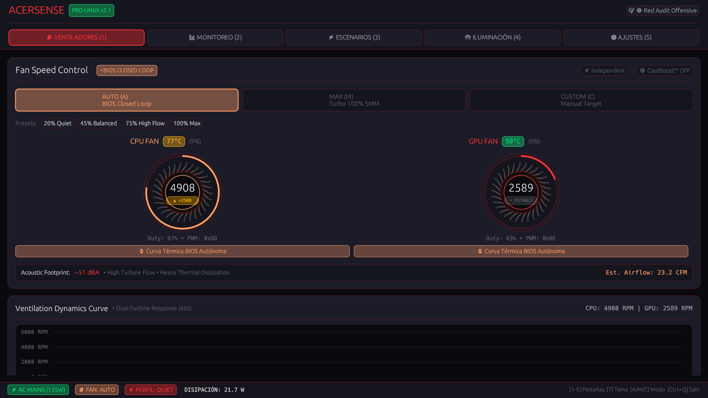
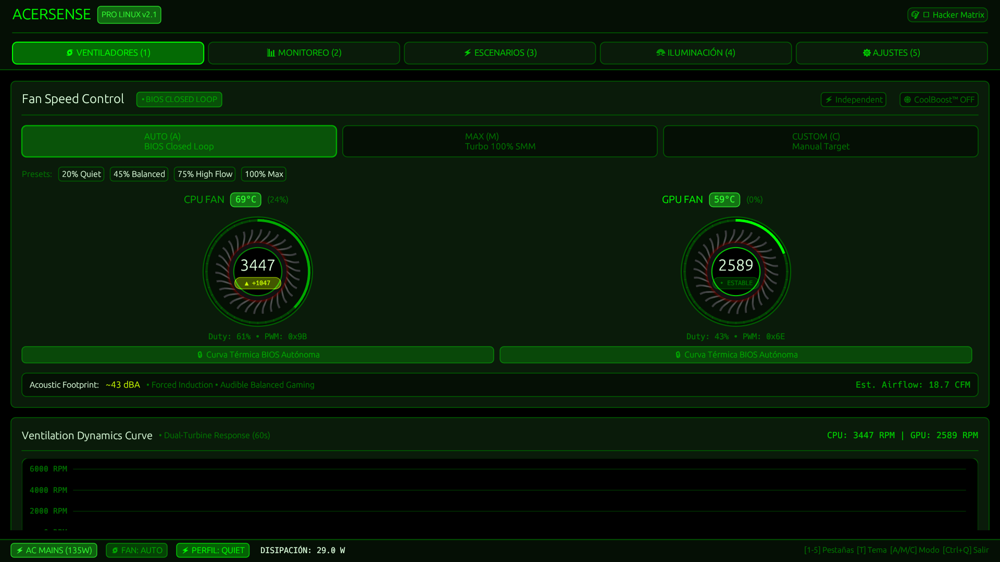
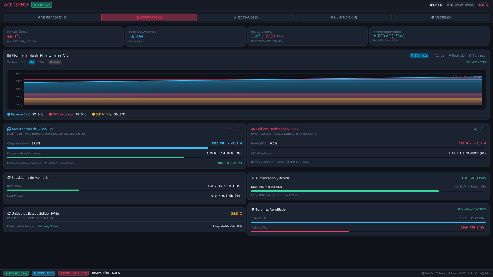
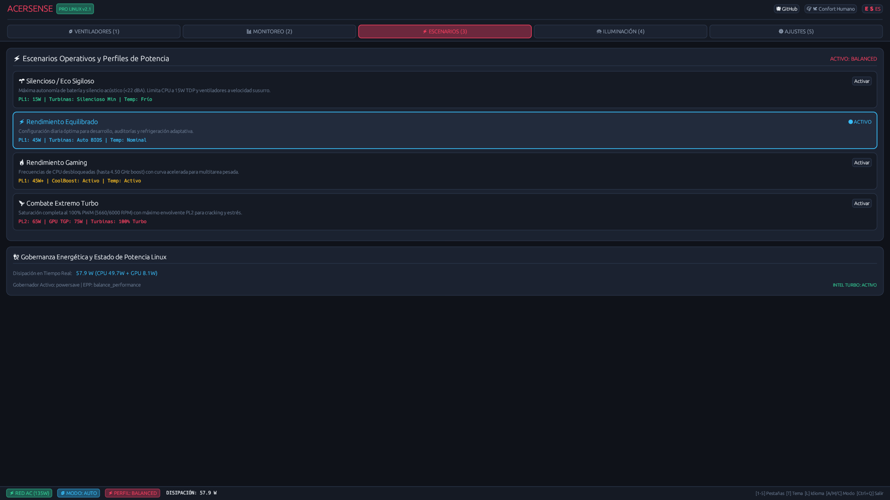
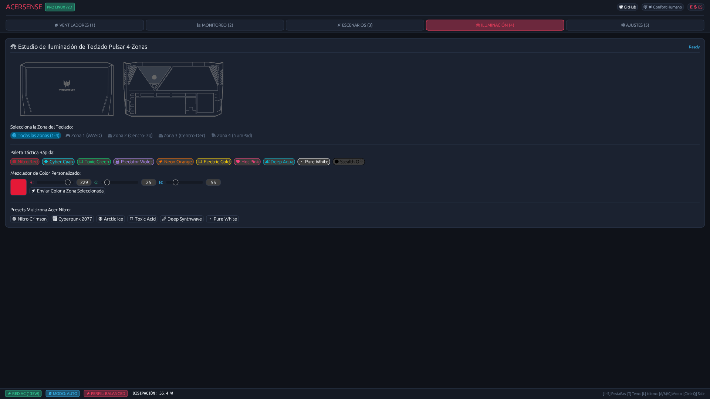
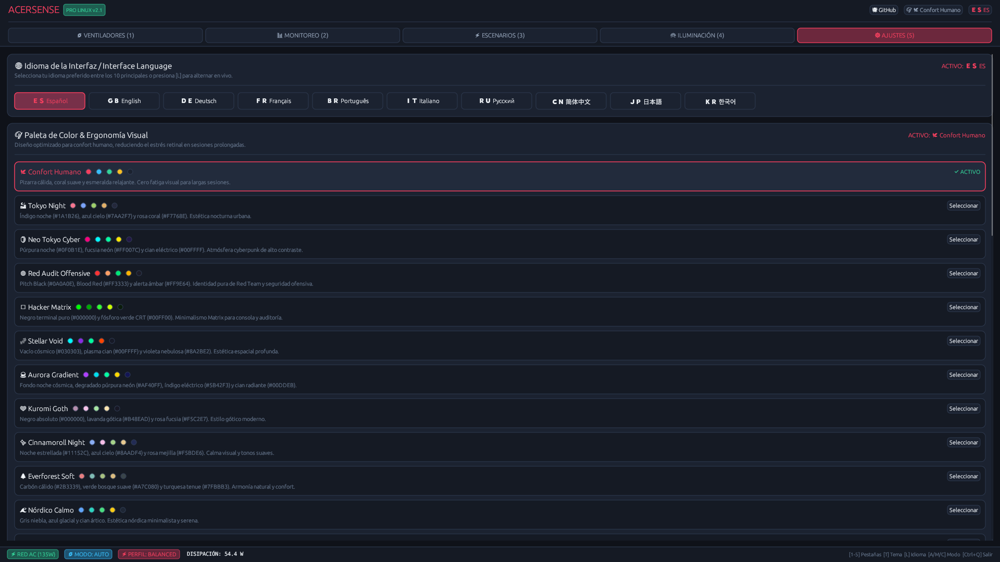

Uno de los mayores dolores de cabeza para cualquier usuario de Linux en laptops gaming (como las series Acer Nitro 5 y Predator Helios) es la ausencia total de software oficial para gestionar los ventiladores, los perfiles de energía, el umbral de carga de la batería y la iluminación RGB del teclado. Durante años, los usuarios han tenido que conformarse con curvas automáticas mediocres impuestas por la BIOS o scripts lentos que no sincronizaban ambas turbinas.
En este artículo detallo el proceso técnico de ingeniería inversa de firmware UEFI (InsydeH2O), el análisis de opcodes WMI/ACPI en Ring-0 y Ring -2 (SMM), y la construcción de AcerSense Pro Linux v2.1.0 (Rust Edition): una suite completa escrita 100% en Rust con interfaz acelerada por GPU a 60+ FPS, 25 temas visuales ergonómicos (WCAG AAA), motor multilingüe nativo (10 idiomas), gestión de perfiles de energía EPP y soporte nativo para barras de estado (Waybar, Polybar e i3blocks).

Dashboard nativo en Rust (egui/eframe) corriendo sobre Parrot OS / BSPWM con telemetría en vivo y turbinas a 6,122 RPM
1. El Problema: El Candado Térmico de la GPU en Linux
En el chasis Acer Nitro 5 (AN515-55 con GPU NVIDIA RTX 3050), al intentar forzar el modo de máxima refrigeración desde Linux escribiendo directamente en los registros del microcontrolador Embedded Controller (EC Compal en puertos 0x62 y 0x66), nos topábamos con un comportamiento anómalo:
- La turbina del CPU aceleraba de inmediato hasta su límite físico (~5,400–5,660 RPM).
- La turbina de la GPU permanecía congelada a velocidad basal (~2,400 RPM), ignorando la anulación manual si la tarjeta gráfica estaba a menos de 50 °C.
¿La causa? El firmware de la placa base ejecuta un bucle de control en System Management Mode (SMM, Ring -2). Cada pocos milisegundos, el controlador EFI evalúa la carga térmica de la GPU y sobrescribe cualquier valor inyectado en el EC si la GPU está en reposo.
2. Ingeniería Inversa del Firmware UEFI BIOS (InsydeH2O)
Para desbloquear el control legítimo del hardware, extrajimos la imagen de la BIOS GH51Mx64.fd (25.56 MB) utilizando uefi-firmware-parser, iasl y Ghidra, analizando más de 68 tablas ACPI y 300 módulos DXE/SMM.
┌─────────────────────────────────────────────────────────────────────────────┐
│ ACPI & SMM EXECUTION FLOW │
│ │
│ Linux OS (/proc/acpi/call) │
│ │ │
│ ▼ │
│ \_SB.PCI0.WMID.WMBH (Instance 1 - Gaming DSDT Table) │
│ │ │
│ ▼ │
│ Method (WSMI, 2) ──> Escribe 0xD0 en Puerto I/O 0xB2 (SMI Interrupt) │
│ │ │
│ ▼ │
│ System Management Mode (Ring -2) ──> Driver: `efi_module_0xA033C8.efi` │
│ │ │
│ ▼ │
│ Embedded Controller (EC RAM) ──> Registros 0x10, 0x20, 0x14, 0x24 │
└─────────────────────────────────────────────────────────────────────────────┘Analizando la tabla DSDT SSDT_ACRSYS_ACRPRDCT y el binario NitroSenseService.exe de Windows, descubrimos la estructura del Opcode Maestro de 64 bits (0x820009) despachado a través del Método WMI 14 (0x0E):
Bits 22..27 Bits 16..21 Bits 0..7
Valor Hex: 0x800000 | 0x020000 | 0x09
Representación: [ GPU Turbo ] | [ CPU Turbo ] | [ Dual Fan Mask ]
• Modo MAX TURBO DUAL: 0x09 | 0x020000 | 0x800000 = 0x820009
• Modo AUTO DUAL: 0x09 | 0x010000 | 0x400000 = 0x410009
• Modo CUSTOM DUAL: 0x09 | 0x030000 | 0xC00000 = 0xC30009Al despachar la instrucción oficial por la compuerta WMBH y configurar el Método 16 (Target PWM 100%):
# Desbloquear comportamiento en BIOS e inyectar máxima potencia en GPU
echo "\_SB.PCI0.WMID.WMBH 1 0x0E 0x820009" > /proc/acpi/call
echo "\_SB.PCI0.WMID.WMBH 1 0x10 0x6404" > /proc/acpi/callLa turbina de la GPU rompió el candado SMM alcanzando su récord físico de 6,122 RPM de forma estable y sostenida.
3. ¿Por qué reescribir la suite en Rust? (Benchmarks v2.1.0)
Las primeras iteraciones del proyecto utilizaban Python y PyQt5. Aunque funcionales, presentaban problemas intrínsecos para software de administración de sistemas:
- Consumo de memoria elevado: ~52 MB para una interfaz básica (y más de 280 MB en el NitroSense original de Windows con sus 3 servicios en segundo plano).
- Latencia en arranque: El intérprete de Python requería ~180 ms para inicializarse al consultar telemetría por CLI.
La reescritura en Rust puro (v2.1.0) demostró una eficiencia radical:
| Métrica | NitroSense (Windows) | AcerSense Pro v2.1.0 (Rust) |
|---|---|---|
| Uso de RAM | ~280 MB (3 servicios) | ~16 MB (GUI) / ~3 MB (CLI) |
| Tiempo de Ejecución CLI | N/A | < 2 ms (Binario Nativo ELF) |
| Latencia I/O ACPI | 45–120 ms (WMI COM) | < 150 µs (/proc/acpi/call directo) |
| Tasa de Refresco GUI | 30 FPS | 60+ FPS (OpenGL / Hardware-Accelerated) |
| Empaquetado y Distribución | Instalador MSI propietario (~120 MB) | Paquete Debian (.deb) precompilado |
4. Innovaciones Técnicas de la Versión 2.1.0
La versión v2.1.0 introduce un ecosistema integral tanto para estaciones de combate y auditorías de seguridad como para uso diario intensivo:
- Sincronización Dual Extrema de Turbinas (5,400 / 6,122 RPM): Calibración de modulación de ancho de pulsos PWM a 8 bits (0–255) y mitigación de thermal throttling bajo cargas prolongadas de compilación o cracking de hashes.
- Suite Ergonómica de 25 Temas Visuales (WCAG AAA): Motor de estilizado reactivo con conmutación en caliente mediante el atajo
[T]. Incluye paletas tácticas como Red Audit (Offensive), Tokyo Night, Neo Tokyo, Hacker Matrix, Nordic Calm, Everforest, Cyber Nitro y variantes pastel accesibles. - Motor Multilingüe Reactivo (10 Idiomas): Cambio dinámico instantáneo con la tecla
[L]entre Español, Inglés, Francés, Alemán, Ruso, Chino Simplificado/Tradicional, Japonés, Coreano, Portugués e Italiano, con renderizado tipográfico nativo UTF-8/CJK. - Gestión de Envolventes de Energía (EPP Power Envelopes): Conmutación instantánea entre perfiles térmicos (
Quiet,Balanced,Performance,Turbo) que ajusta la política energética de la CPU en/sys/devices/system/cpu/cpu*/power/energy_performance_preference. - Control de Iluminación RGB de 4 Zonas: Modos de hardware estático, respiración y onda con selección de color hexadecimal por zona independiente.
- Bloqueos Tácticos de Gaming y Operación: Supresión de tecla Windows (
WinKey Lock), desactivación de Touchpad para evitar pulsaciones accidentales, y conmutación de LCD Overdrive (3ms). - Protección Química de Batería (Battery Health Care al 80%): Límite directo en el registro del EC para prolongar el ciclo de vida útil de las celdas de litio durante sesiones de laboratorio conectadas a corriente alterna.
- Módulos Nativos para Polybar, Waybar e i3blocks: Salida formateada y JSON de alta velocidad con Nerd Fonts para barras de estado ligeras.
- Mapeo de la Tecla Física [N]: Detección del scancode
0xf5mediante reglas UDEV/HWDB y mapeo aXF86Launch1para desplegar la GUI instantáneamente.
📸 Galería Visual de Capacidades (Suite v2.1.0)
Explora la suite táctica de AcerSense Pro en acción. Cada captura refleja una superficie de control directo sobre el hardware a resolución nativa de 1920x1080. Haz clic sobre cualquier tarjeta para expandirla a pantalla completa en alta definición.

Tema Red Audit (Offensive)
Paleta de combate táctica de alto contraste, calibrada específicamente para ejercicios Red Team nocturnos y terminales con cero fatiga visual.

Tema Hacker Matrix (Terminal Green)
Estética de consola hacker inspirada en monitores de fósforo verde con acentos monocromáticos de alta legibilidad técnica.

Telemetría & Monitorización Dinámica
Gráficos de telemetría en tiempo real acelerados por GPU (OpenGL/egui) monitoreando temperaturas de silicio, curvas de RPM y frecuencias.

Perfiles Térmicos & Gobernadores EPP
Conmutación de envolventes de energía entre Quiet, Balanced, Performance y Turbo con inyección directa en energy_performance_preference de la CPU.

Iluminación Teclado RGB 4 Zonas
Control por zonas independientes del teclado con efectos de onda, respiración y presets estáticos, con inyección directa de colores hexadecimales.

Ajustes de Sistema & Matriz i18n
Selector interactivo de los 25 temas visuales, motor de traducción en 10 idiomas con renderizado de glifos CJK/UTF-8 y calibración de offsets térmicos.
5. Instalación y Empaquetado
AcerSense Pro v2.1.0 está disponible en formato .deb para Debian, Parrot OS, Ubuntu y Kali Linux, así como en código fuente para compilación con Cargo:
# Opción 1: Paquete Debian Oficial (.deb precompilado)
sudo dpkg -i acersense_2.1.0_amd64.deb
sudo apt-get install -f
# Opción 2: Instalador Automatizado con resolución de dependencias y udev
git clone https://github.com/rodrigo47363/acersense-linux.git
cd acersense-linux
sudo ./install.sh
# Opción 3: Compilación directa con Cargo
cargo build --release
sudo install -m 755 target/release/acersense /usr/local/bin/
sudo install -m 755 target/release/acersense-gui /usr/local/bin/6. Comandos Tácticos por CLI y Barras de Estado
Para automatizar perfiles en scripts de inicio, auditorías o atajos de teclado:
# Telemetría completa de sensores y estado térmico
acersense status
# Forzar ventiladores al 100% (6,122 RPM) para sesiones de Hashcat o pruebas de estrés
acersense fan --mode max
# Conmutar envolvente de energía a Turbo (máximo rendimiento CPU)
acersense profile --set turbo
# Activar modo silencioso (Quiet) para biblioteca o terminal sigilosa
acersense profile --set quiet
# Activar protección química de batería al 80%
acersense battery --limit-80 on
# Cambiar idioma a Español y tema visual a Red Audit
acersense lang es
acersense theme "Red Audit (Offensive)"
# Configurar bloqueos tácticos de gaming
acersense gaming --winkey off --touchpad off --overdrive on
# Lanzar interfaz gráfica interactiva
acersense-guiIntegración en Waybar (~/.config/waybar/config):
"custom/acersense": {
"exec": "acersense --waybar",
"return-type": "json",
"interval": 2,
"format": "{}",
"on-click": "acersense-gui"
}Integración en Polybar (~/.config/polybar/config.ini):
[module/acersense]
type = custom/script
exec = acersense --polybar
interval = 2
click-left = acersense-gui
format-foreground = #00f0ffConclusión
Con AcerSense Pro Linux v2.1.0 demostramos que la ingeniería inversa de bajo nivel combinada con el poder y seguridad de memoria de Rust permite crear utilidades de hardware que no solo igualan, sino que superan con creces en rendimiento, latencia, consumo y diseño a las herramientas privativas de los fabricantes en Windows.
El código es 100% libre bajo licencia GPL-3.0 y está disponible para la comunidad en GitHub: github.com/rodrigo47363/acersense-linux.
Comentarios